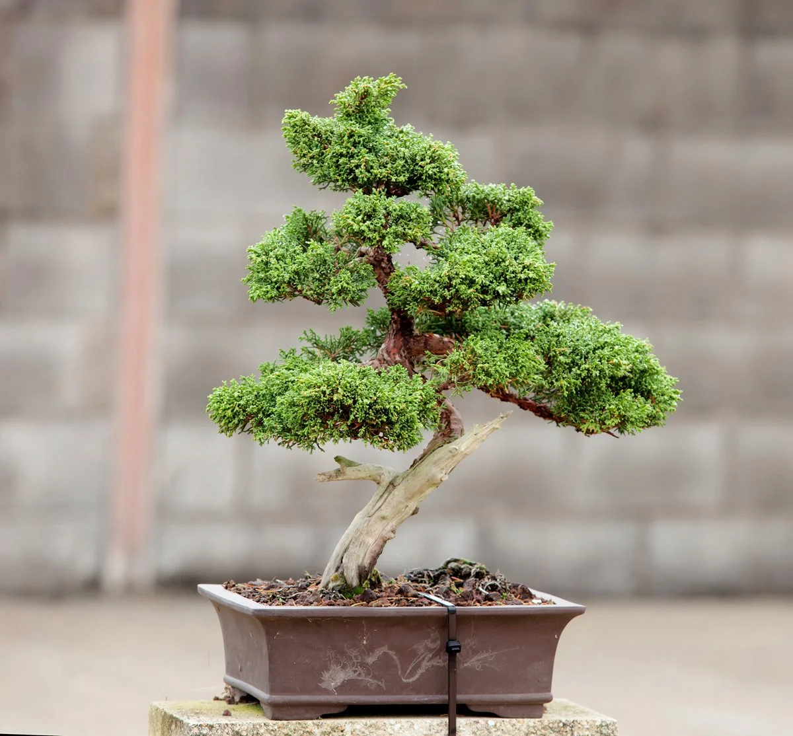
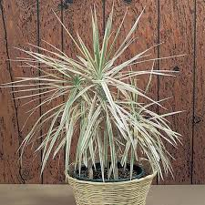
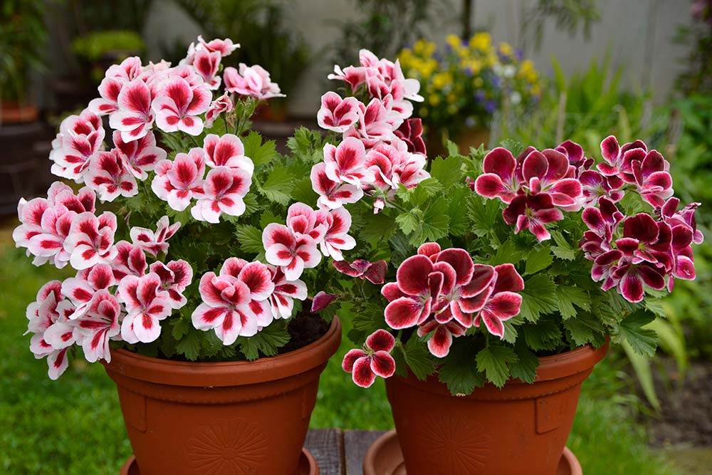

Dessa växter är våra mest populära inomhusväxter:
Detta är ett av våra bonsaiträd. Bonsaiträd kommer från Japan och har en höjd runt 25cm är bonsaiträd en perfekt växt för vilket rum som hälst. Dock behövs konstant vård av grenarna opch lövveket.
Detta är en kandracena. Kantdracena är en växtart familjen stickmyrtenväxter från Réunion i Frankrike. Det uppges ofta att arten är från Madagaskar, men detta är felaktigt. Kantdracena kan bli från 4.5 m hög till hela 6 m när den är fullvuxet

Trinagelfikusen
57kr
Triangel fikusen är en av de bästa in inomhusväxter, då den är
kompakt
och dess löv liknar en treklöver. Triangel fikusen kan växa till ungefär 20cm över jorden.
Dessa är våra mest populära utomhusväxter:
69kr
Pelargronen är en blomart som kommer ifrån området i sydafrika. Pelargoner har stark
växtkraft
och blommar mycket och länge under hela sommaren. Därför behöver de en riktig kick-start för att komma
igång
efter efter vintern.